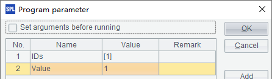
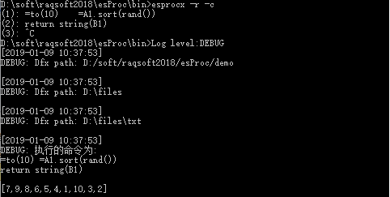
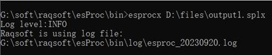

6.1.1 Cellset files without return results
We can execute a cellset file at command line. Use esprocx.bat file, for example, view the batch process file and we can see by default the following operation will be executed:

The following cellset file, D:\files\output1.splx, for example, generates some simulation data and stores them in text file Data1.txt:
|
|
A |
B |
|
1 |
=create(ID,Amount) |
|
|
2 |
for 100 |
>A1.insert(0,#A2,rand(100*100)) |
|
3 |
=file("D:\\files\\Data1.txt") |
>A3.export@t(A1) |
Cellset files without return results are usually those that access data in files or databases. You just need to enter the to-be-executed script file after esprocx.bat. During execution, prompts of start and end will be displayed on the screen, as shown below:

After the execution, the randomly generated data will be written into Data1.txt, as shown below:

If the path in which the esprocx.bat file is located is included into the operating system¡¯s path list, run the file directly instead of running it in the esProc\bin path of the installation directory. But the to-be-called script file must be entered in its full path, or should be located in the current path. For example:

If the to-be-executed cellset file uses parameters, enter their values, separated by spaces, after the script file when executing the esprocx.bat command. Take the following cellset file D:\files\output2.splx as an example:
|
|
A |
B |
|
1 |
=file("D:\\files\\Data1.txt") |
=A1.import@t() |
|
2 |
for IDs |
>B1.modify(A2,Value:Amount) |
|
3 |
>A1.export@t(B1) |
|
The file uses two parameters: IDs and Value, as shown below:

The cellset is to import the Data1.txt file just created, modify some of the records with specified ordinal numbers to make their Amount fields eqivalent to the specified Value, and store these records in the file again. The prompts displayed on the screen during execution are as follows:

Two parameters, one is a sequence [2,3,5,7,11], and the other is an integer 99999, are input while the cellset file, output2.splx, is called. Similar to a cross-cellset call, the input parameters will be assigned to the cellset parameters according to their order instead of their names during the command line call. In this case [2,3,5,7,11] is assigned to the first parameter IDs and 99999 is assigned to the second parameter Value. After the command line is executed, data in Data1.txt will have been modified:

When using esProc Enterprise Edition or Standard Edition, we can execute esprocx.exe to launch the command line, instead of esprocx.bat mentioned previously. To execute a file that does not return a result:

If parameters need to be set up when executing the file, do the configurations as we explained previously but there is no need to enclose the parameters with quotation marks:
Generating random data files and modifying data after execution in the similar way as we mentioned above.